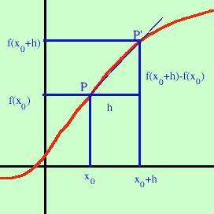
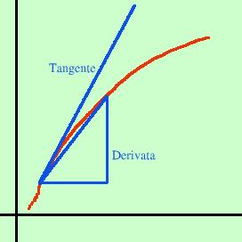

| Presa una curva ne fissiamo un punto P e quindi un altro punto P' diverso da P e tracciamo la retta PP' ora basta far scivolare P' sulla curva verso P e quando P' sara' coincidente con P avremo la retta tangente alla curva in P (Ho tracciato delle semirette invece che rette per rendere piu' semplice la figura) Definizione: si definisce tangente ad una curva in un punto la posizione limite della retta sottesa da una corda al tendere del secondo punto della corda sul primo Ora se riprendiamo la definizione di derivata, vedi che quando h tende a zero il secondo punto sulla curva si sposta verso il primo punto fino a coincidere inoltre il rapporto incrementale e' uguale al coefficiente angolare della retta che congiunge i due punti sulla curva. Quindi, al limite, la derivata ed il coefficiente angolare della retta tangente alla curva devono coincidere cioe': Definizione: la derivata di una funzione in un punto e' uguale al coefficiente angolare della retta tangente alla funzione in quel punto  Veramente qui occorre fare una piccola precisazione: la tangente e' sempre da una parte della curva mentre la derivata si trova su una corda della curva stessa: cioe' la derivata e il coefficiente angolare della tangente differiscono per qualcosa, ma qualcosa di talmente piccolo (un infinitesimo) da non influenzare i calcoli; comunque torneremo sull'argomento parlando del concetto di differenziale |